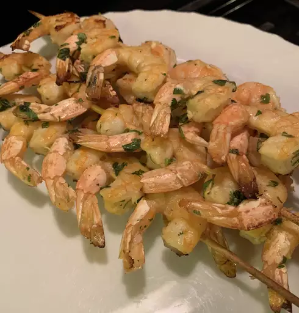

Margarita Grilled Shrimp

Description
The shrimp can be marinated in the margarita marinade for up to 3 hours before grilling. The amount of red pepper used can be adjusted according to how hot you like it. The marinade is also great on chicken.
Ingredients
- 1 pound shrimp, peeled and deveined
- 3 tablespoons olive oil
- 3 tablespoons chopped fresh cilantro
- 2 tablespoons fresh lime juice
- 2 cloves garlic, minced
- 2 teaspoons tequila
- ¼ teaspoon cayenne pepper
- ¼ teaspoon salt
- 4 bamboo skewers, soaked in water for 20 minutes
Home